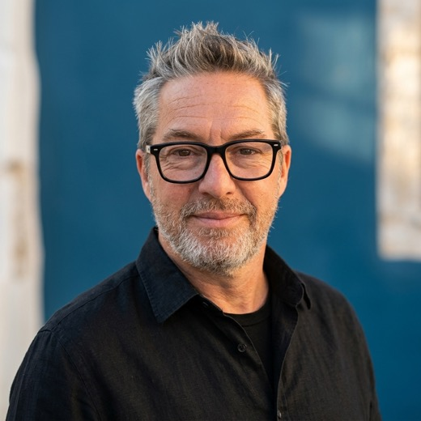

TCE · Rénovation & Agencement
07 63 85 71 33 · cfillon@me.com
Saint-Étienne · mobilité Loire, Haute-Loire, Rhône, Auvergne-Rhône-Alpes
Trente ans de bâtiment, dont quinze en responsabilité d'affaires. J'ai monté des activités, des équipes et des portefeuilles clients, et j'ai conduit des chantiers de la première visite jusqu'à la levée des réserves.
Mon terrain, c'est la rénovation et le second œuvre tertiaire : des plateaux de bureaux, des sièges sociaux, des établissements recevant du public, le plus souvent en site occupé, où le client juge la date de livraison et ce qu'il voit en arrivant le matin.
Directeur opérationnel TCE
2022 – 2026Groupe Gap, Lyon
Chargé d'affaires grands comptes
2019 – 2022Espace Agencement — agencement Solid Surface
Chargé d'affaires
2017 – 2019A.C.T.M
Fondateur et gérant
2015 – 2017Actes Décoratifs — maîtrise d'œuvre en rénovation intérieure
Conducteur de travaux
2005 – 2015TLM — construction de maisons individuelles
Co-fondateur et co-gérant
1995 – 2005V & F — distribution B2B
Tour Saint-Gobain
Paris La Défense — agencement tertiaire haut de gamme.
Siège Dior
Neuilly-sur-Seine — opération menée en direct avec la direction immobilière.
Sièges AG2R et AliExpress
Boulogne et Paris — plateaux tertiaires, site occupé.
Crédit Agricole et Groupama
Rénovation lourde, comptes développés et suivis sur plusieurs années.
Complexe cinématographique
Saint-Chamond — 2 000 m², charpente métallique, construction neuve.
Soixante maisons individuelles
Loire et Haute-Loire — ossature acier, labels HPE et BBC.
Trente ans à chiffrer et à négocier, des deux côtés de la table. Je sais ce qu'un lot coûte vraiment quand il se passe mal, et c'est là que se joue la marge.
Chez Groupe Gap, le réseau de sous-traitants, les équipes, les process et le portefeuille ont été construits en partant de rien.
Un chantier dans un bâtiment qui vit se phase, s'annonce et se nettoie tous les soirs. L'entreprise qui ne le comprend pas ne revient pas.
Mise aux normes d'établissements recevant du public, en lien avec des architectes spécialisés et des ergothérapeutes.
Arbitrer quand deux affaires se chevauchent, reprendre un conducteur sans le casser devant son client, et lui laisser la main quand il a raison.
SketchUp Pro, Batigest, Isis Bâtiment, Excel à un niveau avancé. Et un projet d'application de suivi des dossiers d'ouvrages exécutés, mené en parallèle.
Le CV complet, en PDF
Parcours détaillé, compétences et formation.